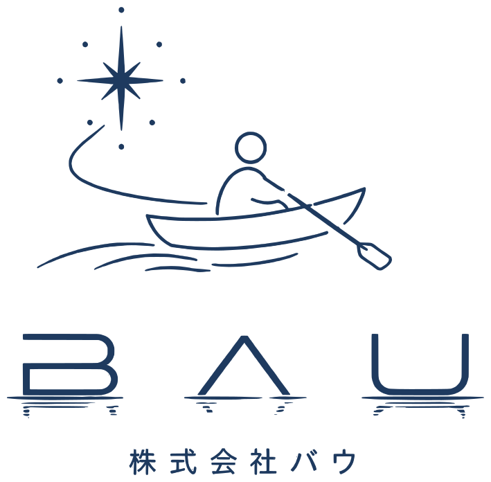
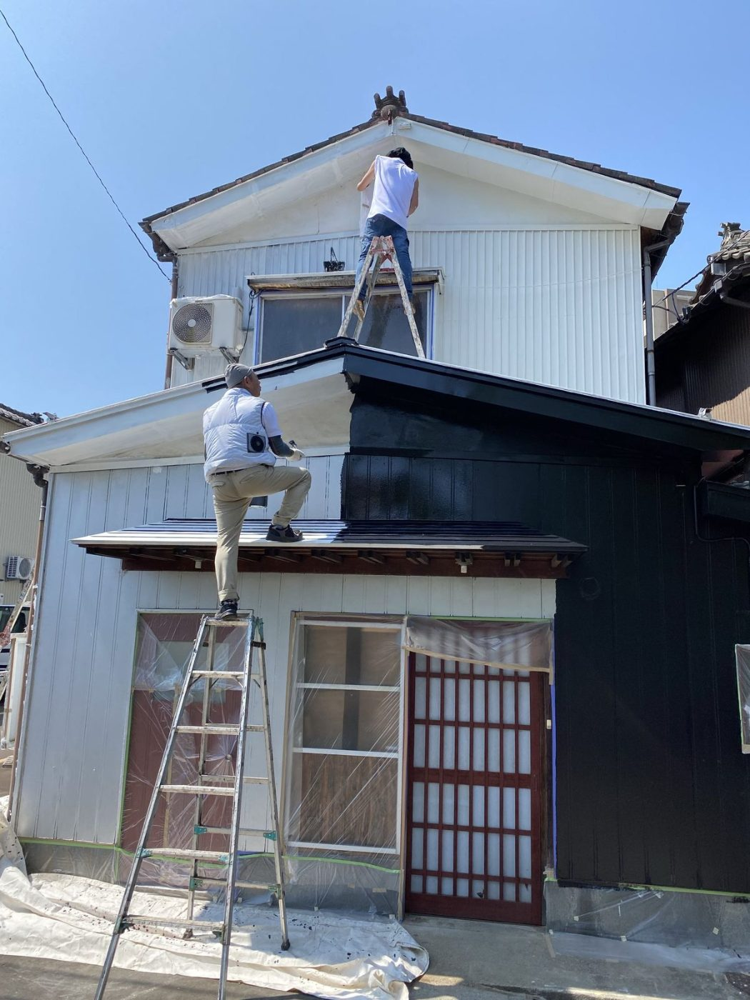
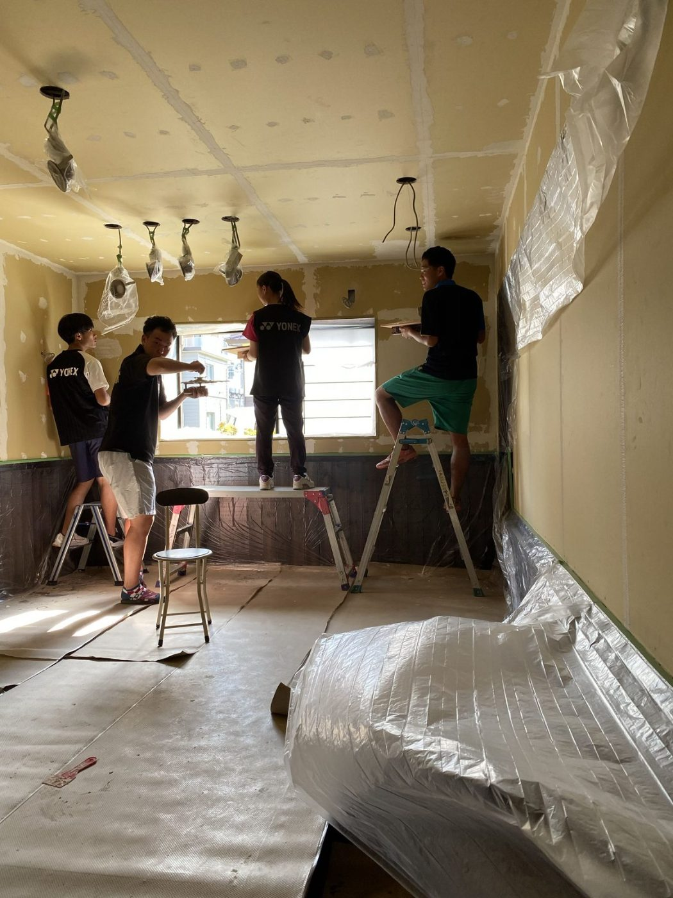
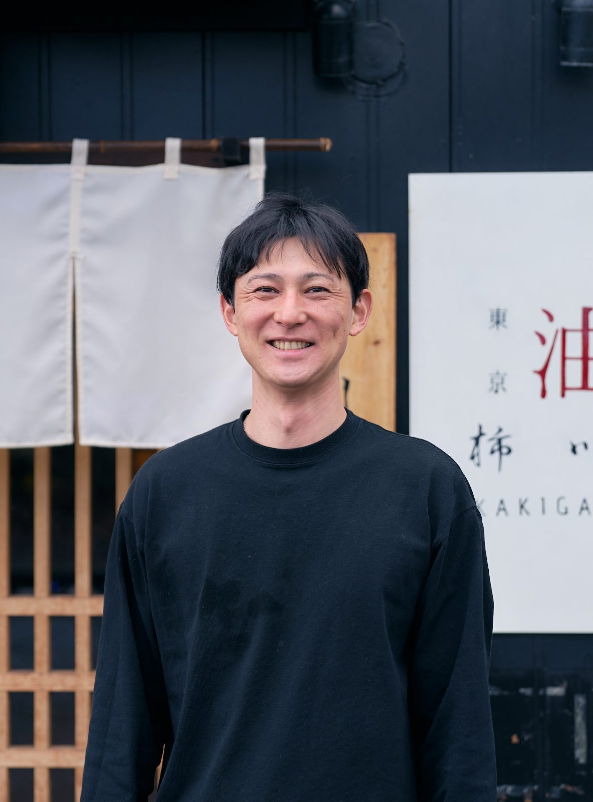

会社サイトへRECRUIT
この街に、情熱を。
ともに、漕ぎ出しませんか。
2020年10月。
12年間勤めた高校の教壇を降りた男が、
仲間と教え子と一緒に古民家を2か月かけて直して、
新潟県長岡市に小さな油そば屋を開けました。
それが柿川亭のはじまりです。


2020年、仲間と教え子と一緒に、2か月かけて古民家を直しました。
あれから6年。
長岡・仙台・新潟・福島に6店舗。
通販で全国へ。のれん分けで、さらに先へ。
小さな川から漕ぎ出した舟は、
いま、もう少し大きな川に出ようとしています。
目指すのは全国50店舗、そしてその先の海です。
次の一歩を、一緒に漕いでくれる人を探しています。
OUR NAME
社名について
「バウ」とは、船首。船の頭のことです。
ボートを漕ぐとき、人は進行方向に背を向けて座ります。
オールをかくたび、舟は自分の背中側へ進んでいく。
この先に何があるのかは、誰にも分かりません。
だから私たちは、北極星を掲げます。
夢や目標という、たったひとつの目印。
それだけを頼りに、ただ懸命に漕ぐ。
柿川という小さな川から漕ぎ出したこの舟が、
やがて信濃川へ、そして大海原へ。
その舳先に立つ人を、いま募集しています。
PHILOSOPHY
私たちが大事にしていること
MISSION
Add oil for our town
〜街に情熱を注ぎ、応援し、加速させる〜
VISION
挑戦と応援が循環し、街が世界を動かす「熱源」になる
VALUE
Beginning ── まず、自分から
Altruism ── 「利他」をエネルギーにする
Uplift ── 可能性を引き上げろ
STANCE
Stay hot , Stay kind
〜熱くあれ。優しくあれ。〜
油そばは熱いうちが一番美味しい。
冷めない情熱と、一口で心まで温まる一杯を。
私たちは、街も一緒だと思っています。
情熱の溢れる街が一番輝く。
これまでやってきたこと
2020年10月 長岡に1号店を開業
新潟・宮城・福島に6店舗
（長岡本店／仙台連坊店／アブララボながおか／白山市場店／新大前店／福島店）
通信販売で全国へ発送
デリバリー専用商品の開発
子ども食堂への継続的な支援（油そばの提供、施設・設備の提供）
小中学校でのキャリア教育（登壇実績あり）
地域のスポーツ教室による場づくり
うまくいかなかった店もあります。
でも、挑戦を止めることはありませんでした。
お店のことを大事にしながら、街に関わることも同じように大切にしてきました。
これからやること
さらなる店舗の拡大、そして世界進出。日本一の油そば屋になる
まずは2030年までに全国50店舗
現在は山形への出店の準備を進めてます。
また、次の候補地として柏崎や燕三条など、新潟県内でのさらなる展開も視野に入れています。
EC・デリバリーの拡大
やることは決まっています。
主体的に、一緒にこの挑戦の船に乗ってくれる人を探しています。
この仕事の、他にはないところ
給与の数字だけを見れば、もっと高い会社はあります。
それでも、うちにしかないものがあります。
01
自分の店を持てます
社内独立支援制度があります。
いつか自分の店を、と思っている人のための道が、社内にあります。
現に社員として働きながら、一年で自分の店舗を運営している実績もあります。
02
新しい店の立ち上げを任されます
すでに山形、新潟県内など、店舗を増やす計画を進めています。
できあがった店を回すのではなく、ゼロから建てる側に立てます。
03
終わる時間が読めます
長岡本店はL.O.20:00、閉店20:15。深夜までは営業しません。
飲食で、これは珍しいと思います。
店舗によっては夕方営業をやめて、夜間で営業している店舗もあります。
04
メニューを提案できます
「この具材を乗せたら美味しいかも」を、実際に商品にできる規模の会社です。
スタッフの考案したメニューが導入されている事例も多数あります。
30秒で終わります。履歴書は必要ありません。
募集する役割

新規出店・事業拡大にともなう「店長候補」を募集します。
最初から店長として立っていただくわけではありません。
まずは既存店で、仕込みから接客まで一通りを覚えていただきます。
そのうえで、新しい店の立ち上げや、既存店の運営をお任せしていきます。
キッチン業務（仕込み／調理／洗い物／開閉店）
ホール業務（接客／配膳／電話応対／開閉店）
慣れてきたら、発注・売上管理・シフト作成・スタッフ育成
将来的には、新店の立ち上げ
長岡本店の、ある一日
09:45
出勤。まず、店内をきれいにします。
食材の準備、お湯を沸かして、開店の支度。
毎日きれいな店内でお客様をお迎えする。ここを一番大事にしています。
11:00
昼の営業開始。ここから14:30までが一番忙しい時間です。
手が空いたときは、その合間に仕込みも進めます。
14:30
昼の営業終了。片づけと発注。
休憩。まかないを食べて、16:30まで。
16:30
夜の営業準備。店内の清掃チェック、お湯を沸かす。
17:00
夜の営業開始。
20:00
ラストオーダー。所定の勤務時間は、ここまでです。
20:15
閉店。片づけをして、その日の売上を締めます。
ここからは時間外労働として、手当がつきます。
20:45
退勤。
所定の実働は8時間15分、休憩2時間です。
昼と夜のあいだに2時間の休憩が入るので、通しで立ちっぱなしにはなりません。
閉店後の締め作業のぶんは、時間外労働として支給しています。
勤務地について
次のいずれか、またはその周辺です。
どこで働いていただくかは、ご本人の希望をうかがったうえで決定します。
新潟県長岡市（本店 ／ アブララボながおか）
宮城県仙台市（仙台連坊店）
新潟市（研修先としてグループのフランチャイズ店舗をご案内する場合があります）
山形県（出店準備中）
新潟県柏崎市・燕三条エリア（出店候補地）
就業場所の変更の範囲
入社後、新規出店や店舗の状況に応じて、勤務地が変わることがあります。
就業場所の変更の範囲は「会社の定める場所」です。
実際に変わるときは、必ず事前にご相談します。
※ 山形・柏崎・燕三条は、現時点では出店の準備段階です。
開店までの間は、既存店での勤務・研修となります。
求める人
MUST
必須
学歴、経験、資格は問いません
未経験の方も歓迎します
WANTED
こんな人に来てほしい
100人のお客様が来たら、100人に笑顔で接することができる人
自分から動ける人
人の成功を、自分のことのように喜べる人
まちや人が好きな人
いつか自分の店を持ちたいと思っている人
油そばが好きな人
WELCOME
あれば活かせる経験
飲食店でのホール／キッチン経験
飲食店の店長経験
調理師免許
待遇
雇用形態
正社員（期間の定めなし）
給与
月給 280,000円
※ 固定残業手当30,000円は、時間外労働16.8時間分として毎月支給します。
※ 16.8時間を超えた時間外労働分は、別途全額を支給します。
※ 22時以降の勤務がある店舗では、深夜手当を別途支給します。
試用期間
3か月 月給 260,000円（基本給230,000円＋固定残業手当30,000円）
※ 役職手当20,000円は、本採用後からの支給となります
※ 習得の早い方は、1か月で本採用となる場合があります
※ 試用期間中も、社会保険は入社日から加入します
勤務時間
1か月単位の変形労働時間制
所定労働時間は1日8時間です
長岡本店 9:45〜20:30ごろ（間に休憩 約1時間45分）
仙台連坊店 10:00〜23:30ごろ（間に休憩 約3時間）
※ 上記は、片付けを終えてタイムカードを切るまでの時間です
※ 所定の8時間を超えた分は、時間外労働として支給します
※ 22時以降の勤務がある店舗では、深夜手当を別途支給します
休日
週休2日制（会社が指定する日）
※ 長岡本店に定休日はありません（年中無休）
※ 仙台連坊店は月曜が定休日です
年次有給休暇（法定どおり）
賞与
会社の業績と個人の評価により、支給する場合があります
退職金
なし
手当・福利厚生
社内独立支援制度
社会保険完備（健康保険・厚生年金・雇用・労災）
役職手当
教育手当（新人教育を担当できるようになった際に支給）
エリアマネージャー手当（複数店舗を見る立場になった際に支給）
交通費支給（社内規定あり）
マイカー通勤可（無料駐車場あり）
まかない無料
制服支給（Tシャツ・ズボン・前掛け・タオル・サンダル）
髪型・髪色・ピアス自由（清潔感のある範囲で）
受動喫煙対策
屋内禁煙
応募してから、こうなります
01
02
3日以内にこちらからご連絡します
03
面接は1回です
履歴書は持ってきていただきますが、志望動機を暗記する必要はありません。
「なぜここに来たのか」を、あなたの言葉で聞かせてください。
こちらからも、給与・休日・これからの計画を包み隠さずお話しします。
04
ご希望があれば、体験入店もできます
半日でも一日でも。働いてから決めていただいて構いません。
最後に

うちは、まだ小さな会社です。
社長を入れて、社員は数人しかいません。
だからこそ、入ってすぐに責任のある仕事を任せていきます。
だからこそ、あなたのやったことが、そのまま会社の形になります。
私が大事にしているのは、「ペイフォワード（恩送り）」という考え方です。
受けた恩をその人に返すのも大切ですが、その恩をまた別の人に送っていくという考え方。
送った恩が次の人へ、そしてまた次の人へと循環していく。
そんな善意の循環が増えていけば、
街は、少しずつ温かくなっていくのだと思います。
住んでいる人が「この街はいい街だな」と思える。
そんなまちを、つくり上げていきたいと考えています。
整った会社で、決められた仕事をしたい人には向きません。
この思いが共有できて、まだ何もない場所に、自分の手で店を建てたい人に来てほしい。
だから、挑戦する人を私たちは全力で応援します。
そしていつかあなたが、次の誰かを応援する側になってくれたら、うれしいです。
Stay hot , Stay kind.
株式会社バウ 代表取締役 岡 雅俊
30秒で終わります。履歴書は必要ありません。
お店の様子を見る
株式会社バウ｜〒940-0081 新潟県長岡市南町1丁目10-16